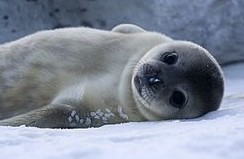

La foca de Weddell (Leptonychotes weddellii) es una especie de mamífero pinnípedo de la familia de los fócidos. Fue nombrada así en honor a Sir James Weddell, comandante de la expedición marina del Reino Unido al Mar de Weddell. Viven en grandes manadas y habitan la región circumpolar del hemisferio sur, Antártida.
- Dieta: peces, crustáceos, krill, calamares, camarones, cefalópodos, raramente pingüinos y otras focas.
- Las focas de Weddell pueden nadar a velocidades de 10km/h.
- Las hembras suelen ser un poco más grandes y pesadas que los machos
- Las hembras alcanzan la madurez sexual alrededor de los 3 años de edad, pero tanto hembras como machos no suelen reproducir antes de los 7
- Las crías miden alrededor de 1,25 metros al nacer y pesan unos 25kg
Regresar a la página de Inicio